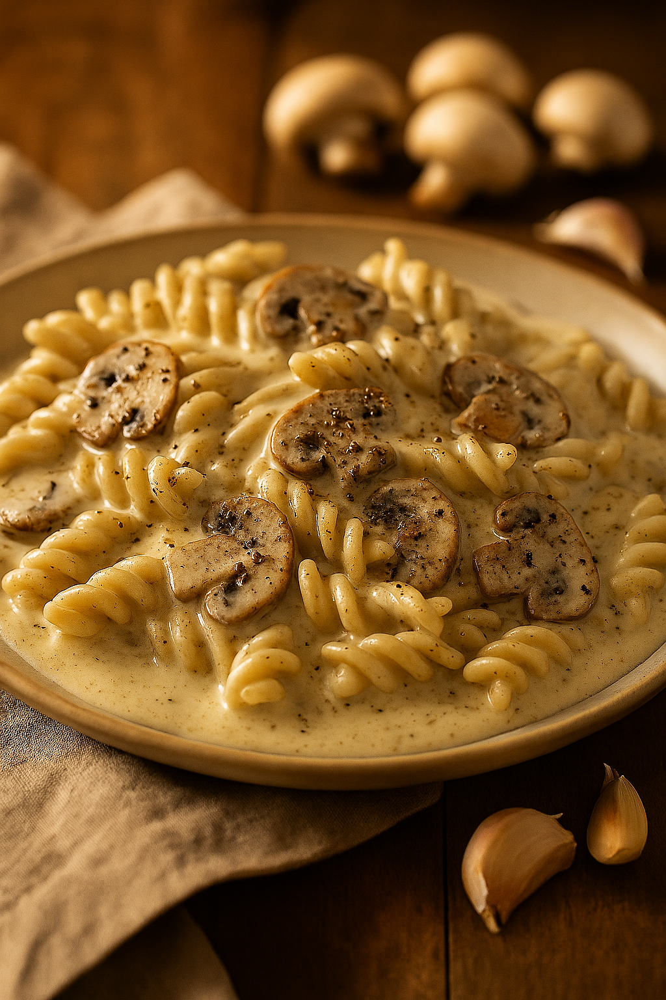

Vegan Mushroom Pasta

Description
A creamy mushroom pasta - but vegan with oat cream!
Ingredients
- 500g pasta
- 750mL vegan oat cream
- 1/2 tbsp vegetable oil
- 1 tbsp vegan margarine
- 5 cloves Garlic, minced
- 8 large white button mushrooms, chopped
- 1 medium yellow onion, diced
- 1 tsp coarse black pepper
- Salt to taste
- Seasoning
Steps
- Boil pasta in salted water, drain, and mix in the margarine. Set aside.
- Cook the garlic, mushrooms, and onions in a separate pan with vegetable oil.
- Once the mushrooms and vegetables are cooked, add the oat cream, salt, and pepper into the same pan. Stir.
- Bring the cream sauce to a boil and simmer for 5 minutes.
- Mix the cream sauce with the pasta.